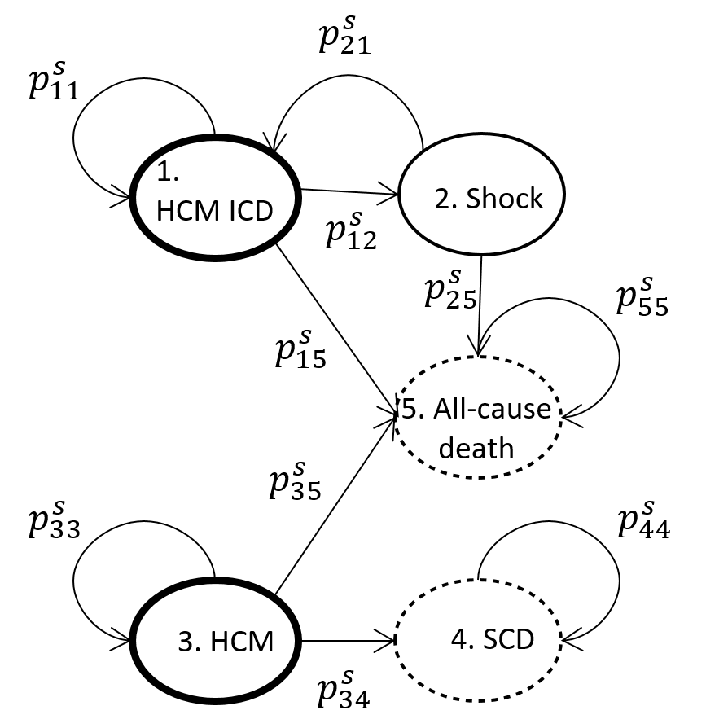

Cost-effectiveness analysis of a risk algorithms for implantable cardioverter defibrillator decision-making

This work conducted a contemporary cost-effectiveness analysis examining the use of implantable cardioverter defibrillators (ICD) for primary prevention in patients with hypertrophic cardiomyopathy (HCM).
A traditional ICD is a small battery-powered device placed in the chest with wires, called leads, attached to the heart. It detects and stops irregular heartbeats. An ICD continuously checks the heartbeat and delivers electric shocks, when needed, to restore a regular heart rhythm.
A discrete-time Markov model was used to determine the cost-effectiveness of different ICD decision-making rules for implantation. Several scenarios were investigated including the reference scenario of implantation rates according to observed real world practice. A 12-year time horizon with an annual cycle length was used. Transition probabilities used in the model were obtained using Bayesian analysis.
Using a 5-year SCD risk threshold of 6% was cheaper than current practice and has marginally better total quality adjusted life years (QALYs). This is the most cost-effective of the options considered, with an incremental cost effectiveness ratio of £834 per QALY. Sensitivity analyses highlighted that this decision is largely driven by what health related quality of life (HRQL) is attributed to ICD patients and time horizon.
While we have shown that a 6% 5-year SCD risk cut-off provides the best cohort stratification to aid ICD decision-making, this will also be influenced by the particular values of costs and HRQL for subgroups or at a local level. The process of explicitly demonstrating the main factors which drive conclusions from such an analysis will help to inform shared decision-making in this complex area for all stakeholders concerned.
References
- Green N, Chen Y, O’Mahony C, Elliott PM, Barriales-Villa R, Monserrat L, Anastasakis A, Biagini E, Gimeno JR, Limongelli G, Pavlou M, Omar R. A cost-effectiveness analysis of hypertrophic cardiomyopathy sudden cardiac death risk algorithms for implantable cardioverter defibrillator decision-making. Eur Heart J Qual Care Clin Outcomes. 2023 Sep 2:qcad050. doi: 10.1093/ehjqcco/qcad050. Epub ahead of print. PMID: 37660245.